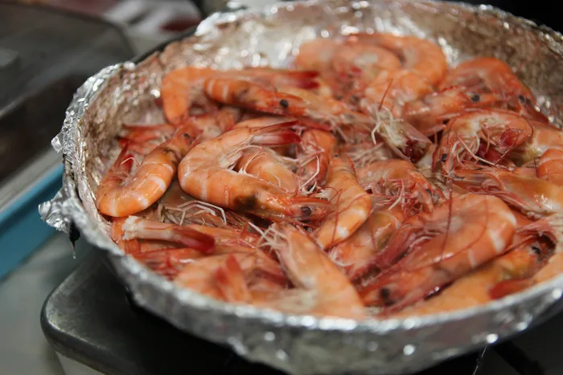
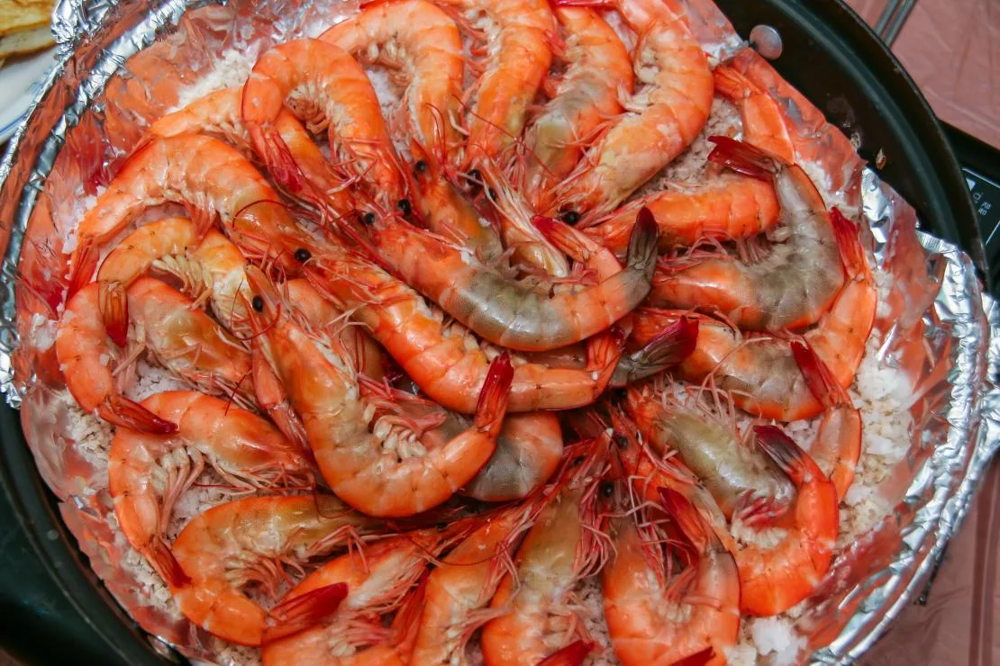
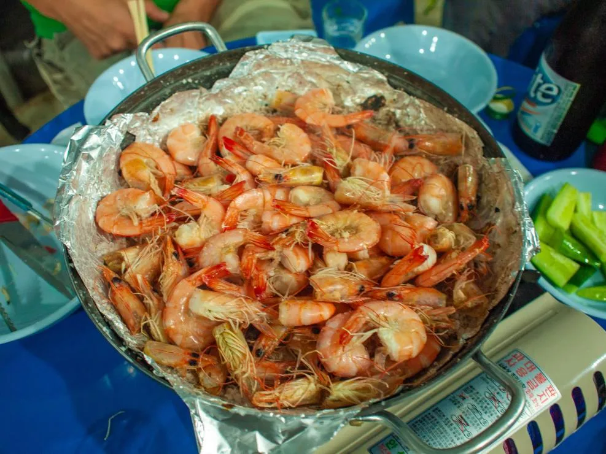
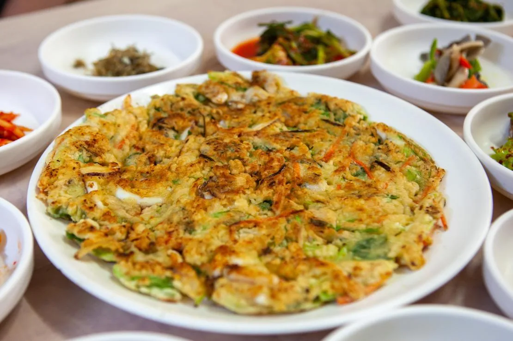
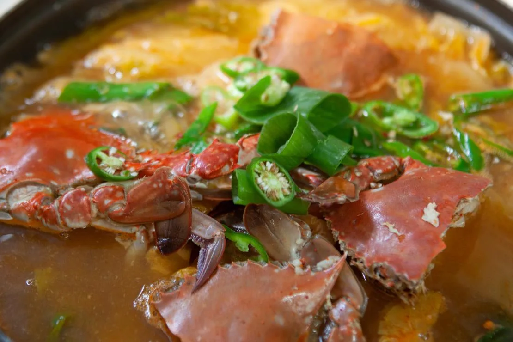
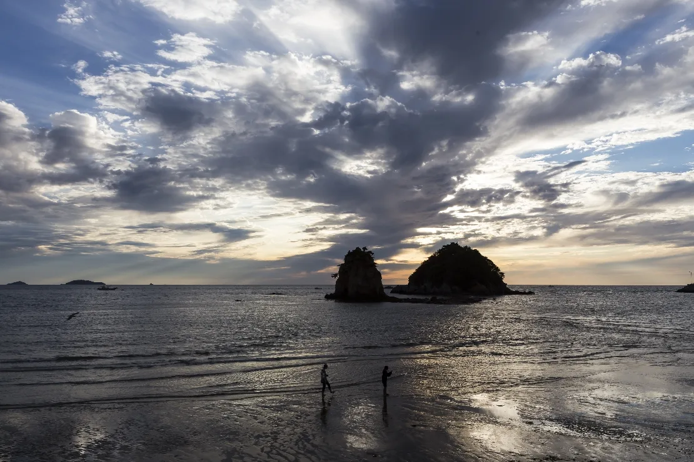
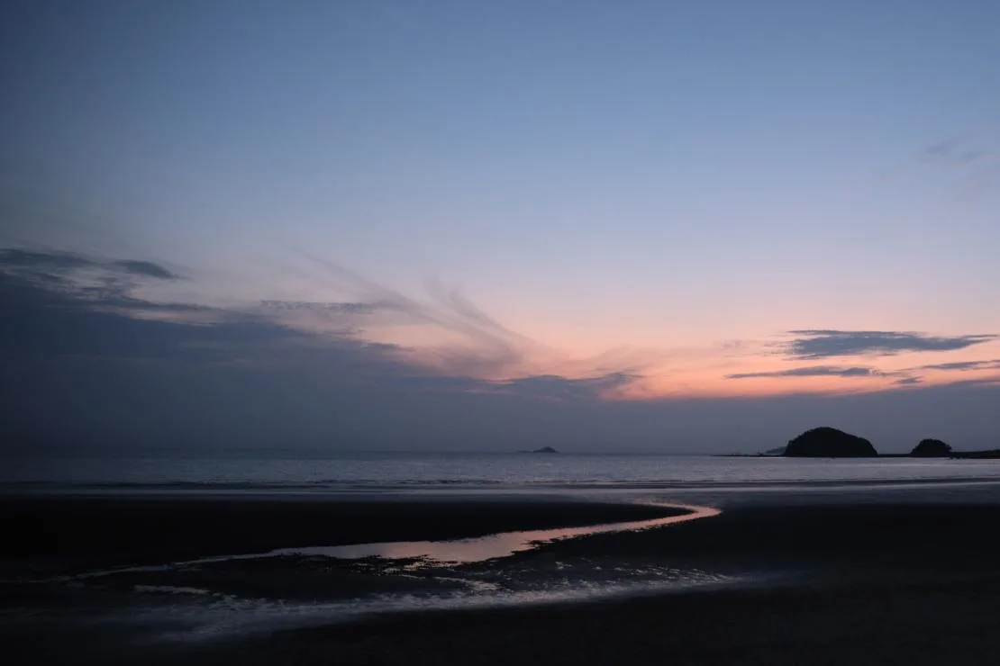
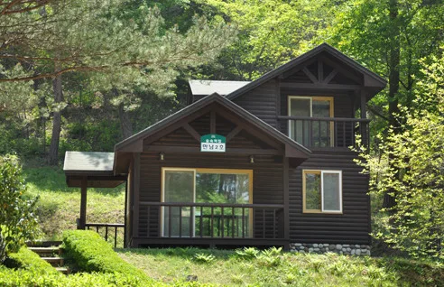

▲ 소금구이로 구워낸 안면도 자연산 대하. 백사장항은 전국 최대의 자연산 대하 집산지로 꼽힌다
"거기 남당항 아니에요?" 가을마다 서해안 대하 축제 얘기가 나오면 꼭 나오는 질문이다. 하지만 태안군 안면읍 백사장항과 홍성군 서부면 남당항은 이름도, 위치도, 축제 운영 방식도 전혀 다른 곳이다. 태안군은 9월 12일부터 19일까지 8일간 제25회 안면도 백사장 대하축제를 백사장항 일원에서 연다. 백사장항은 충남 대하 어획량의 약 80%를 차지하는, 전국 최대 규모의 자연산 대하 집산지다.
1. 남당항 아닙니다 — 태안 안면도와 홍성 남당항의 차이

▲ 백사장항 인근 식당에서 흔히 볼 수 있는 대하 소금구이 상차림 ⓒ 채지형 (공유마당, CC BY)
두 축제는 매년 비슷한 시기에 열리다 보니 혼동하는 사람이 많지만, 실제로는 완전히 다른 행정구역, 다른 항구다. 안면도 백사장 대하축제는 태안군 안면읍 백사장항에서, 남당항 대하축제는 홍성군 서부면 남당항에서 각각 별도로 운영된다. 가장 큰 차이는 가격 체계다. 남당항은 대하 1kg 기준 포장 4만 5,000원, 식당 이용 6만 원으로 업소 공통의 단일가격제를 운영하지만, 백사장항은 이런 고정가 제도가 없다. 조업량과 크기에 따라 매일 시세가 달라지는 시가(時價) 거래가 기본이다.
| 구분 | 안면도 백사장 대하축제 | 홍성 남당항 대하축제 |
|---|---|---|
| 행정구역 | 충남 태안군 안면읍 | 충남 홍성군 서부면 |
| 2026년 기간 | 9월 12일~19일 (8일간) | 9월 4일~11월 8일 (66일간) |
| 대하 가격 | 시가 (고정가 없음) | 단일가격제(1kg 포장 4.5만 원/식당 6만 원) |
| 규모 | 제25회 | 제31회 |
※ 태안군·홍성군 공식 발표 기준. 두 지역은 승용차로 약 1시간 거리에 있다.
즉 남당항에서 봤던 가격표를 그대로 떠올리고 백사장항에 가면 당황할 수 있다. 백사장항에서는 주문 전에 당일 시세를 직접 확인하는 절차가 필요하다는 뜻이다.
2. 가격표가 없다 — 그래서 얼마인가

▲ 좌판에서 즉석으로 구워 먹는 대하 상차림. 가격은 당일 조업량과 크기에 따라 달라진다 ⓒ 박동식 (공유마당, CC BY)
태안군과 현지 언론 모두 "자연산 대하 가격은 크기와 당일 조업량에 따라 달라질 수 있어 주문 전 가격을 확인하는 것이 좋다"고 안내한다. 축제 측이 공식적으로 못 박은 kg당 가격은 없다는 뜻이다. 참고할 만한 지표는 도매 경매가다. 수산물 시세 정보에 따르면 2026년 7월 자연산 상(上)등급 대하의 평균 도매가는 1kg당 3만~3만 4,000원 선이었다. 다만 이는 산지 도매 기준이고, 백사장항 직판장·식당에서 실제로 체감하는 소비자가는 계절·물량에 따라 이보다 높게 형성되는 경우가 많다.
가격 확인 체크
- 백사장항 직판장은 업소마다 그날그날 다른 가격을 붙여 판매한다. 2~3곳 정도 둘러보고 비교하는 편이 안전하다.
- 축제 기간 중 무료 시식회가 운영되니, 구매 전 맛부터 확인할 수 있다.
- 남당항의 '단일가격제' 같은 고정가를 기대하고 갔다가는 흥정에서 당황할 수 있다. 시세 확인은 필수다.
- 대하는 제철이 9~1월이며, 이 시기 글리신 함량이 높아져 단맛과 감칠맛이 강해진다.
3. 맨손 대하잡기부터 경매쇼까지 — 8일간 프로그램

▲ 대하와 함께 즐길 수 있는 태안 지역 해물파전 ⓒ 채지형 (공유마당, CC BY)
올해 축제는 무대 공연 중심에서 벗어나 체험형·체류형 프로그램을 대폭 늘린 것이 특징이다. 개막식은 12일 오후 7시, 인기가수 축하공연과 불꽃놀이로 시작한다. 이후 8일 내내 이어지는 프로그램은 다음과 같다.

▲ 태안 지역 향토음식 게국지. 대하와 함께 이 지역 별미로 꼽히는 꽃게·묵은지 국물 요리다 ⓒ 채지형 (공유마당, CC BY)
| 프로그램 | 내용 |
|---|---|
| 맨손 대하잡기 | 수조나 임시 어장에서 직접 대하를 잡아보는 체험 |
| 무료 시식회 | 구매 전 대하 맛을 미리 볼 수 있는 시식 행사 |
| 경매쇼·저울 게임 | 실제 수산물 경매를 재현한 참여형 이벤트 |
| 어린이 체험존 | 바다액자·마라카스·키링 만들기 등 공예 체험 |
| 안심가족형 돗자리존 | 백사장 풍경을 보며 쉴 수 있는 가족 단위 휴식 공간(신설) |
가족 단위 방문객을 겨냥한 구성이 눈에 띈다. 아이와 함께라면 맨손잡기 체험과 공예 체험존을 오전에, 시식과 식사는 점심 무렵으로 잡는 동선이 무난하다. 개막일(12일) 저녁 불꽃놀이를 보려면 주차와 인파가 몰리는 만큼 일찍 도착하는 편이 좋다.
4. 대하 먹고 한 바퀴 — 백사장항 주변 동선

▲ 백사장항에서 이어지는 꽃지해수욕장의 할미바위·할아비바위. 저녁 시간대에는 노을 명소로도 유명하다 ⓒ 김순식 (공유마당, CC BY)
백사장항은 그 자체로도 볼거리가 있다. 항구와 드리니항을 잇는 해상보행교 '대하랑꽃게랑교'는 낮 풍경은 물론 노을·야경까지 세 번 다른 얼굴을 보여주는 곳으로 꼽힌다. 축제장에서 대하를 먹은 뒤 다리를 건너 반대편 항구까지 걸어보는 코스가 짧은 산책으로 인기다.

▲ 해 질 무렵의 태안 해안. 안면도 서쪽 해안은 가을철 노을이 특히 곱게 물드는 지역으로 꼽힌다 ⓒ 이정운·채재혁·이원호 (공유마당, 기증저작물)
시간이 넉넉하다면 안면도자연휴양림에서 소나무 숲길을 걷거나, 조금 더 남쪽으로 내려가 꽃지해수욕장의 할미바위·할아비바위 노을을 보는 코스도 함께 묶을 수 있다. 다만 이 도로 구간의 드라이브 경로 자체는 이번 기사의 범위가 아니다. 국도 77호선을 타고 안면도 전체를 훑는 드라이브 코스는 별도로 다룬 적이 있으니, 낙조 명소 위주로 길게 도는 일정을 짜고 싶다면 그쪽을 참고하는 편이 낫다.

▲ 안면도자연휴양림의 소나무 숲 사이에 자리한 숙소 동. 백사장항에서 차로 이동 가능한 거리에 있다 사진=산림청 국립자연휴양림관리소
동선 체크포인트
- 백사장항 → 대하랑꽃게랑교(도보) → 안면도자연휴양림 → 꽃지해수욕장 순서가 무난하다.
- 축제장과 꽃지해수욕장은 차로 15~20분 거리다. 저녁 노을까지 보고 돌아올 계획이면 오후 일찍 축제장에 도착하는 편이 좋다.
- 주말·개막 주(9/12~14)는 백사장항 진입로와 주차장이 혼잡할 수 있어, 가능하면 평일이나 축제 후반부(9/17~19)를 노려볼 만하다.
5. 정리
체크포인트
- 제25회 안면도 백사장 대하축제는 2026년 9월 12일(토)~19일(토), 8일간 태안군 안면읍 백사장항 일원에서 열린다. 입장은 무료다.
- 홍성 남당항 대하축제와는 전혀 다른 축제다. 남당항은 단일가격제(1kg 포장 4.5만 원/식당 6만 원)지만, 백사장항은 고정가 없이 시가로 거래된다.
- 참고 지표로 2026년 7월 자연산 상등급 대하 도매가는 1kg당 3만~3만 4,000원 선이었다. 실제 소비자가는 이보다 높을 수 있으니 현장에서 가격을 꼭 확인하자.
- 개막식은 12일 오후 7시, 축하공연과 불꽃놀이가 열린다. 맨손 대하잡기·무료 시식회·경매쇼·어린이 체험존 등이 8일 내내 운영된다.
- 축제장 주변은 대하랑꽃게랑교·안면도자연휴양림·꽃지해수욕장으로 동선을 확장할 수 있다.
문의는 태안군청 수산과 수산정책팀(041-670-2875)이다.